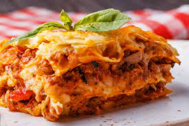

Lasagna Recipe

Description
Homemade Lasagna isn’t as hard to make as it seems. Don’ be intimidated by all the
layers of delicious Italian flavour - try this homemade lasagna recipe
today!
Indredients
These are the ingredients you’ll need to make this top-rated homemade lasagna recipe:
- Meat: This lasagna recipe starts with a pound of ground meat(1/2 pound pork, 1/2
pound lean ground beef).
- Onion: A diced onion is cooked until translucent with ground meat.
- Canned tomatoes: You’ need a can of tomato sauce and a can of crushed tomatoes.
- Fresh herbs: For fresh flavour, chop two tablespoons of parsley and crush one clove of garlic.
- Sugar: A dash of sugar balances out all of the acidity from th tomatoes.
- Spices and seasonings: This homemade lasagna is seasoned with dried basil, dried oregano, salt, and black pepper.
- Noodles: Of course, you’ll need lasagna noodles! This recipe calls for uncooked noodles, but you can use the oven-ready variety to save time.
- Cheese: The cheese layer is made up of cottage cheese and Parmesan. You’ll also need mozzarella
- Eggs: Eggs make the cheese layer extra creamy. Plus, they act as a binding agent(which means they hold the layer together).
Steps
Making homemade lasagna much easier than it looks. You’ll find the full, step-by-step recipe below - but here’s a brief overview of what you can expect:
- Cook the meat: Cook the ground meat in a skillet until browned and crumbly. Add the onion and continue cooking until it’s translucent. Stir in the canned tomato products, half of the parsley, garlic, basil, 1.5 teaspoons of salt, oregano, and sugar.
- Cook the noodles: Boil the lasagna noodles in lightly salted water until they’re al dente.
- Make thr cheese layer: Mix cottage cheese, Parmesan cheese, eggs, the remaining parsley, the remaining salt, and pepper in a bowl.
- Assemble the lasagna: Layer the ingredients according to the recipe (starting with sauce and ending with mozzarella) until the lasagna is assembled.
- Bake the lasagna: Cover with foil and bake in the preheated oven for about half an hour. Remove the foil and continue baking until the top is golden brown.